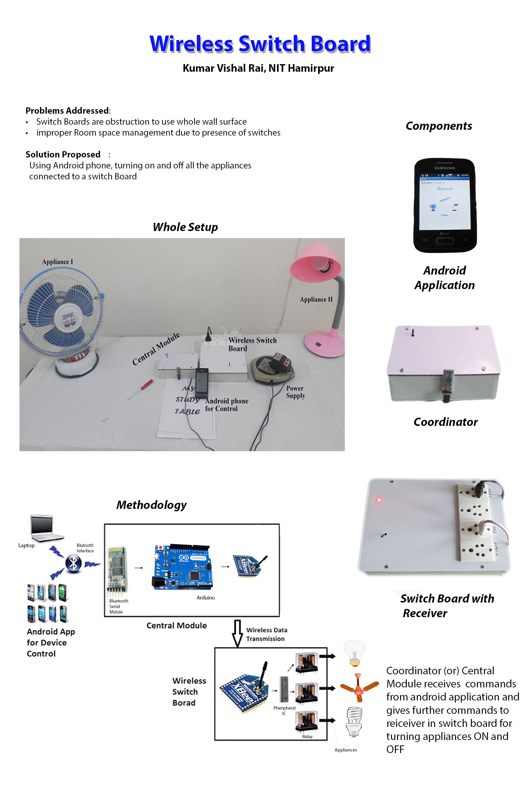

Problem addressed :-
The walls of the building constructed with various switches for the light and fan are an obstruction to use the clear wall surface of the room. Almirahs are sometimes an obstruction to operate the switches conveniently / are to be placed as per the switch boards in the wall. This generates the need of some remote systems through which one can control the appliances and the switch board can be placed just as the 1ft above the wall instead of 4.5ft.
Product :-
This is a combination of an electronic device and an Android Smartphone application that can access the household appliances anywhere in your house. To operate one has to turn on Bluetooth of the phone and connect the device. Open the application and all the connected appliances of your home are at your fingertips.
Technical Specifications :-
1. Components Used: - ARDUINO Uno R3, XBee S2 Module, Bluetooth module, Relays, Installation.
2. Device Range- 10m line of sight from the device. (May vary according to Bluetooth Range of your phone).
ADVANTAGES THIS SYTEM :
1. Requirements of Non- Heating/ Cooling electrical switch boards are removed.
2. Reduces electrical losses.
3. Compact in size as compared to other electrical devices and can be installed anywhere in the house.
Cost: - Rs. 4,000/- (Might vary according to number of switch boards to be controlled.)
Mass Fabrication cost- Rs. 1,000/-